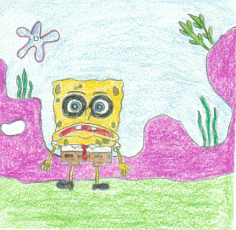
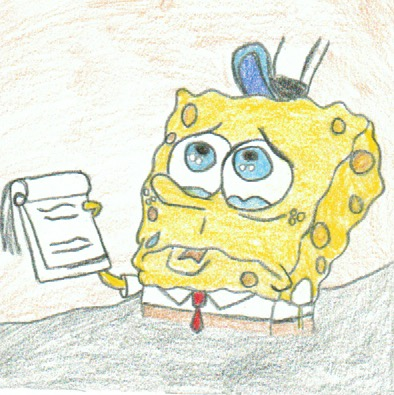
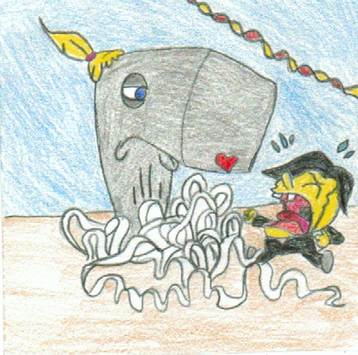
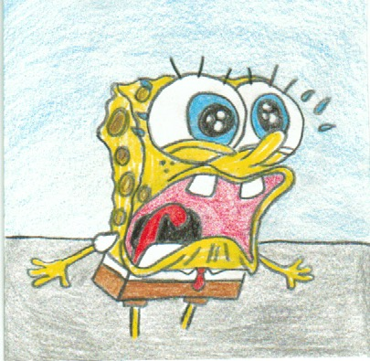
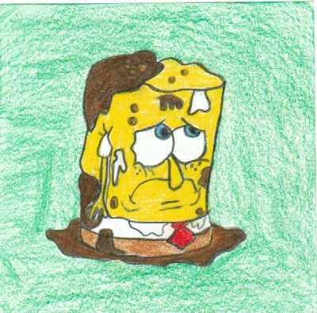
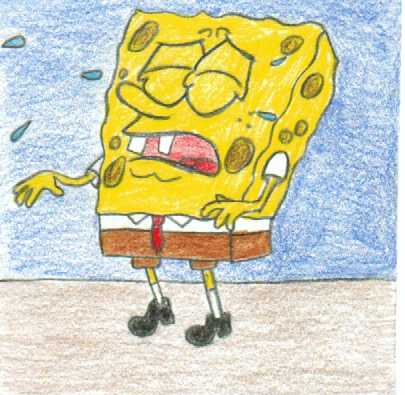

May 1st 1999 - Tea at Treedome
Spongebob pays a visit to Sandy as he enters the freedom he realizes that it is filled with air. He starts to have trouble breathing, he tries to get water in throughout the episode but ends but drying up. In the end, Sandy helps him by giving him a water helmet.
1 / 7

2 / 7

August 14th 1999 - Pizza Delivery
Spongebob goes to deliver a pizza with Squidward, he goes to the door to deliver and a customer opens the door. He takes the pizza but says he has a drink with the order too, but Spongebob checks his notes and says it's only the pizza. The customer starts yelling at him slams the door, and throws the pizza at Spongebob. SQuidwards sees all this and tries to console him but Spongbob breaks into tears.
Spongebob goes to deliver a pizza with Squidward, he goes to the door to deliver and a customer opens the door. He takes the pizza but says he has a drink with the order too, but Spongebob checks his notes and says it's only the pizza. The customer starts yelling at him slams the door, and throws the pizza at Spongebob. SQuidwards sees all this and tries to console him but Spongbob breaks into tears.
3 / 7

September 17th 1999 - Squeaky Boots
Spongebob has new boots which were given by Mr.Krabs. Spongebob wears those boots all the time and never takes it off. but the squeaky noise coming from the boots bothers Mr.Krabs he ends up having nightmares. Mr.Krabs takes the boots off Spongebob while he is sleeping. Spongebob comes into work the next day crying that he lost the boots.
Spongebob has new boots which were given by Mr.Krabs. Spongebob wears those boots all the time and never takes it off. but the squeaky noise coming from the boots bothers Mr.Krabs he ends up having nightmares. Mr.Krabs takes the boots off Spongebob while he is sleeping. Spongebob comes into work the next day crying that he lost the boots.
4/ 7

October 2nd 1999 - The Chaperone
Spongebob is taking Pearl to prom, and Pearl tells him not to do anything embarrassing. Spongebob spends a lot of time getting ready for prom. But as he goes to prom his outfit starts to fall apart or go wrong. In the end, he runs to the bathroom crying.
Spongebob is taking Pearl to prom, and Pearl tells him not to do anything embarrassing. Spongebob spends a lot of time getting ready for prom. But as he goes to prom his outfit starts to fall apart or go wrong. In the end, he runs to the bathroom crying.
5/ 7

December 31st 1999 - Karate Choppers
Spongebob starts learning how to do karate with Sandy. While learning Spongebob accidentally hits a customer, making Mr.Krabs mad. he warns Spongebob to stop learning karate. Spongebob thinks about stopping karate but Sandy convinces him to learn it. Mr.Krabs sees Spongebob doing karate and starts to fire him which leads to him crying.
Spongebob starts learning how to do karate with Sandy. While learning Spongebob accidentally hits a customer, making Mr.Krabs mad. he warns Spongebob to stop learning karate. Spongebob thinks about stopping karate but Sandy convinces him to learn it. Mr.Krabs sees Spongebob doing karate and starts to fire him which leads to him crying.
6/ 7

April 1st 2001 - Fools in April
The day starts with Spongebob remembering that it's April fools Day, Spongebob and Mr. Krabs pull a prank on Squidward. which makes Squidward angry, and he gets back and Spongbob makes him cry.
The day starts with Spongebob remembering that it's April fools Day, Spongebob and Mr. Krabs pull a prank on Squidward. which makes Squidward angry, and he gets back and Spongbob makes him cry.
7/ 7

April 1st 2001 - Neptune's Spatuala
Spongebob and Neptune end up in a battle to see who makes tastier Krabby patties. In the battle, SpongeBob faces difficulties but wins the battle by wining the hearts of the audience with the best Krabby Patty.
Spongebob and Neptune end up in a battle to see who makes tastier Krabby patties. In the battle, SpongeBob faces difficulties but wins the battle by wining the hearts of the audience with the best Krabby Patty.